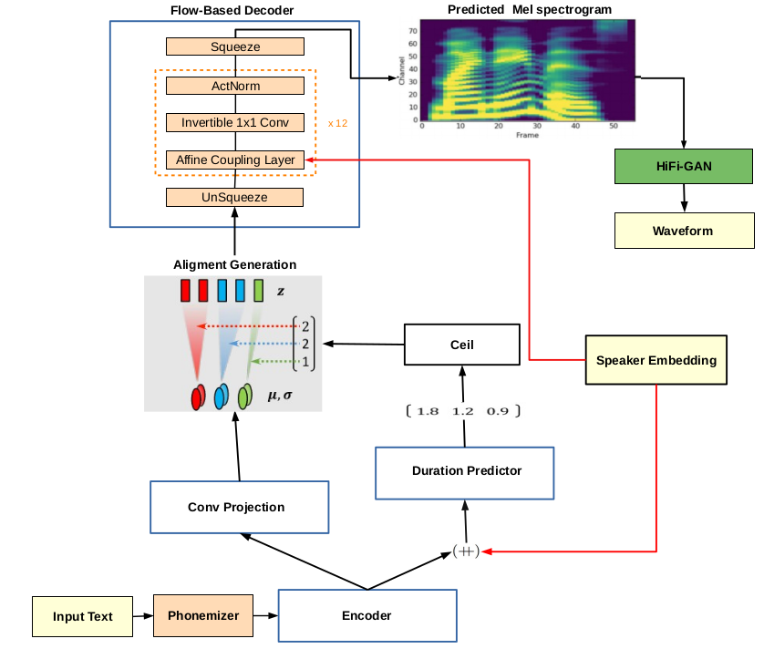

System architecture:

| Model | Unseen Speakers (test) |
| Tacotron 2 | 0.6798 |
| SC-GlowTTS-Trans | 0.7999 |
| SC-GlowTTS-Res | 0.8027 |
| SC-GlowTTS-Gated | 0.7651 |
| SC-GlowTTS-Res-11-speakers | 0.7690 |
Trained using 98 speakers:
| Model | Unseen Speakers (test) | |||||||||||
| p225 | p234 | p238 | p245 | p248 | p261 | p294 | p302 | p326 | p335 | p347 | ||
| Emb reference | ||||||||||||
| Ground truth | ||||||||||||
| Tacotron 2 | ||||||||||||
| SC-GlowTTS-Trans | ||||||||||||
| SC-GlowTTS-Res | ||||||||||||
| SC-GlowTTS-Gated | ||||||||||||
Trained using 11 speakers:
| Model | Unseen Speakers (test) | |||||||||||
| p225 | p234 | p238 | p245 | p248 | p261 | p294 | p302 | p326 | p335 | p347 | ||
| Emb reference | ||||||||||||
| Ground truth | ||||||||||||
| SC-GlowTTS-Res | ||||||||||||
Information on the dataset used and how the training, validation and test division was carried out is in the article.
CSVs for HiFi-GAN training on LibriTTS and VCTK are available here.